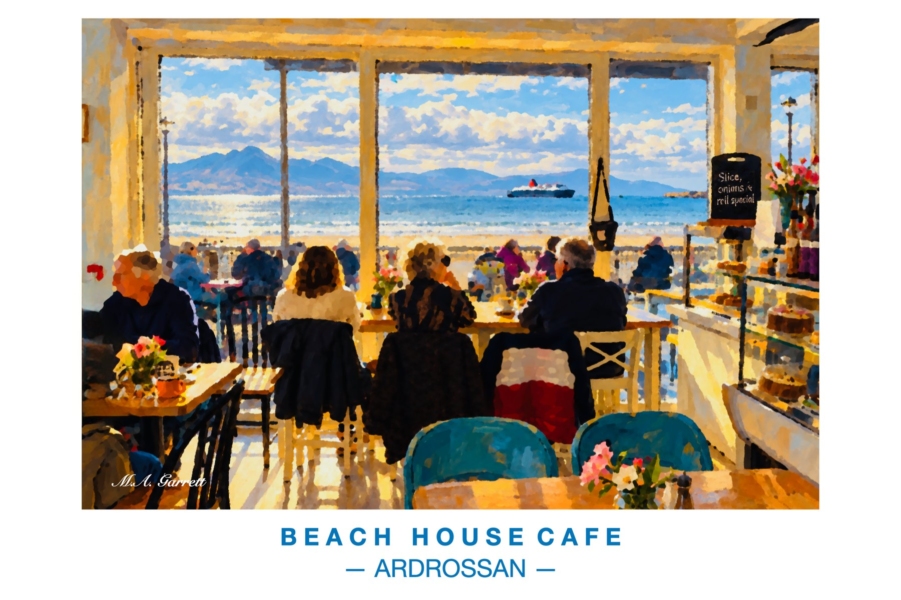

Beach House Café, Ardrossan
Sunlight pours into the Beach House Café in Ardrossan, looking out over the sands towards Arran with a ferry crossing the bay.
Paintings of the Ayrshire coast

Sunlight pours into the Beach House Café in Ardrossan, looking out over the sands towards Arran with a ferry crossing the bay.